Client project · tech lead · team of two
TU Alert: campus incident reports in LINE
Students report a problem in LINE with photos and a map pin, and it goes straight to the office that owns it.
- System architecture
- Secure web development
- Role-based access control
- Team leadership
- TypeScript
- Next.js
- Hono
- Bun
- Prisma
- MariaDB
- Redis
- LINE LIFF
- Semgrep
- gitleaks

What it does
Students report a safety problem such as a fallen tree, a fire or an accident inside LINE, with photos and a map pin, and no app to install. Each report is routed by rule to the office that owns it; that office gets one alert in its LINE group and works the case from a phone app or a web portal.
My part
Thammasat University hired a two-person student team to build TU Alert. I am the tech lead: I lead the team, design the architecture (the API, the staff portal, the LINE apps and how they connect) and the security (roles, second-step sign-in, data retention, scans in CI), and write code alongside my partner Pachara.
Built so far
- Four roles, second-step staff sign-in
- Semgrep and gitleaks in CI
- Unit, integration and end-to-end tests
Not open to users yet. The code is private (client project).
How it is built
A TypeScript monorepo: an API on Hono and Bun with Prisma, MariaDB, Redis and a notification queue; a staff portal in Next.js; student and staff LINE apps (LIFF) in React.
Security built in
Four roles, and staff sign in with a second step. Tools for data retention and erasure, and kill switches. CI scans every change with Semgrep and the full code history with gitleaks.
Quality
Nightly database backups with written restore steps; unit, integration and Playwright end-to-end test suites.
Status
Built for Thammasat University and launching soon: it is in final preparation before opening to users. The code is private (client project).
Screens
Student app, inside LINE
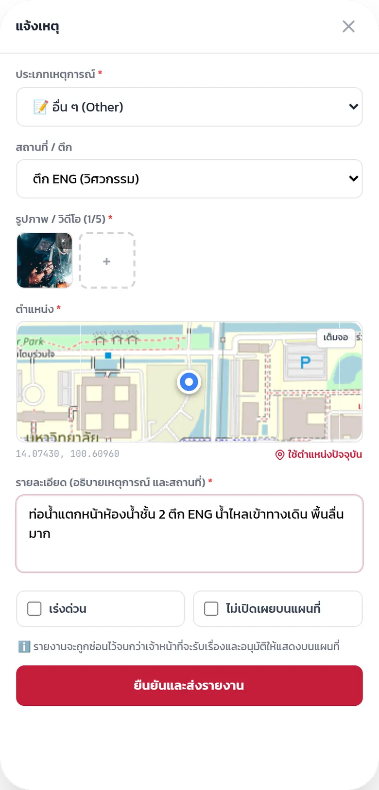
Report form: type, building, photo, map pin and details 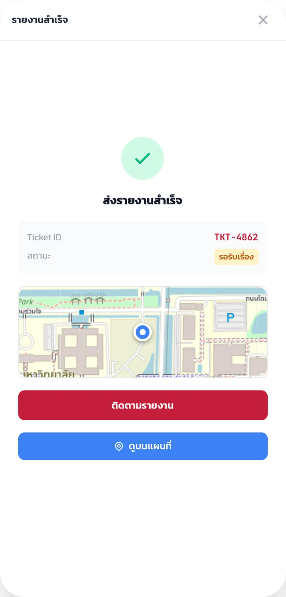
Report sent, with a ticket number to follow 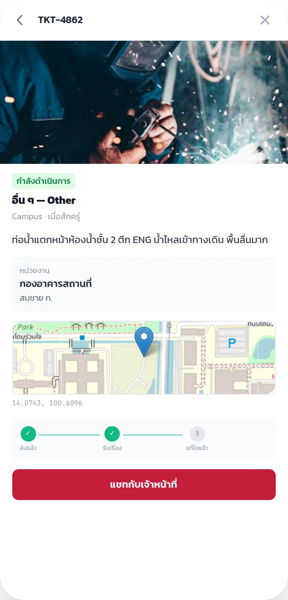
One report: photo, place and progress 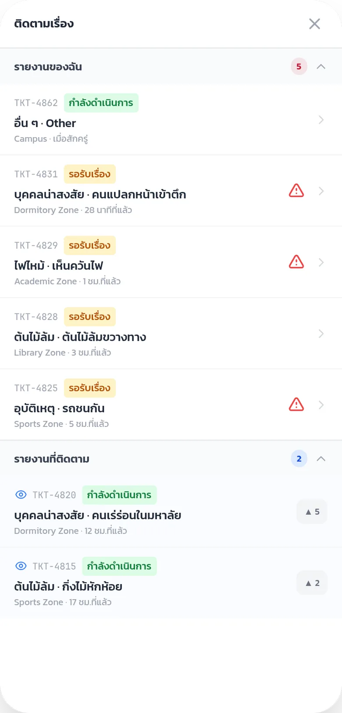
My reports, and reports I follow, with their status 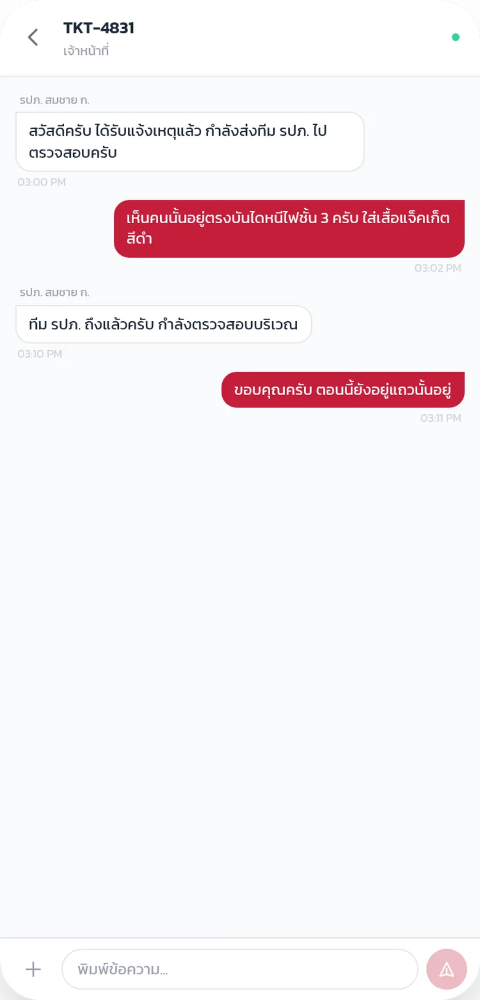
Chat with the staff who handle the report 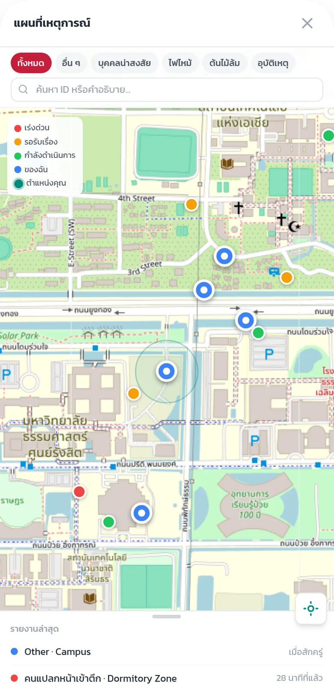
Campus map of open reports, filtered by type


Staff web app
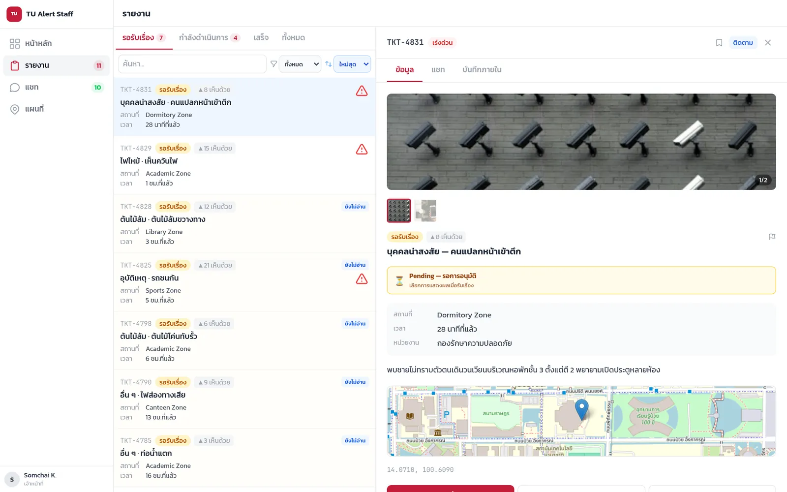
Staff view of one report: photo, status, place and map 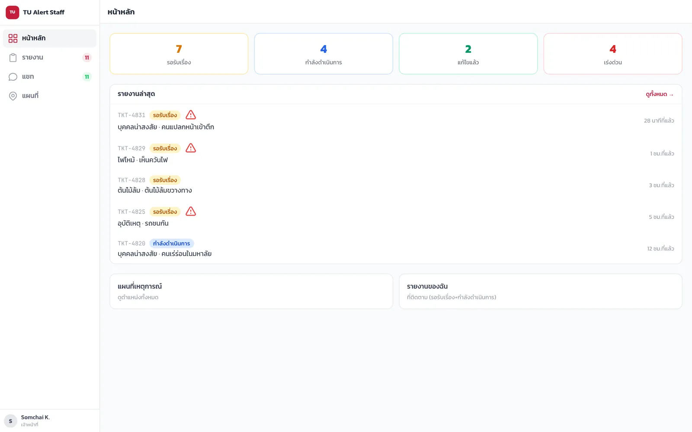
Staff dashboard: counts by status and the latest reports 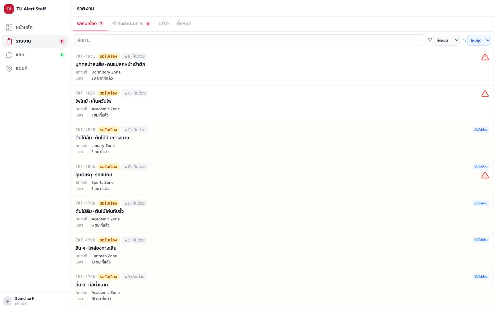
Report queue with filters and urgent flags 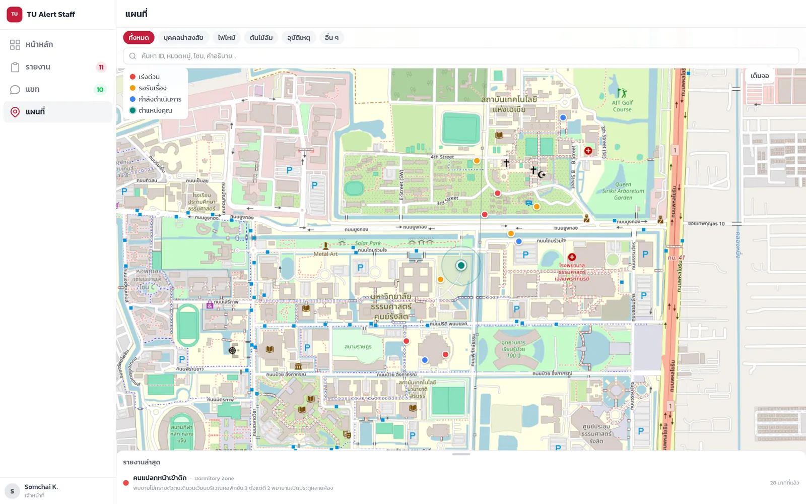
Staff map of every report on campus


From the design demo, with sample data and made-up names. The app is in Thai. Map data © OpenStreetMap contributors.
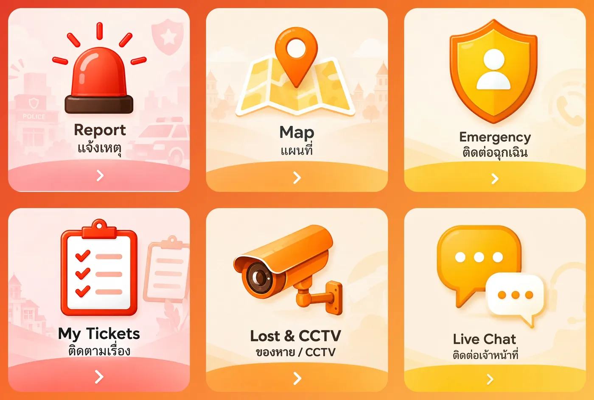
The TU Alert student menu in LINE 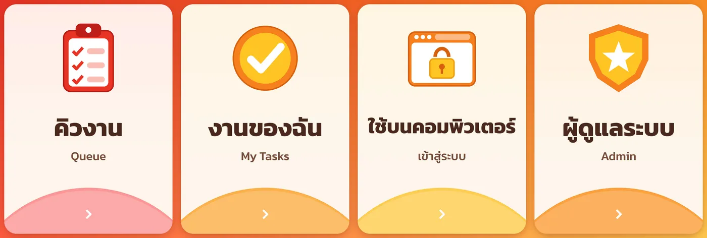
The TU Alert staff menu in LINE: queue, my tasks, computer, admin